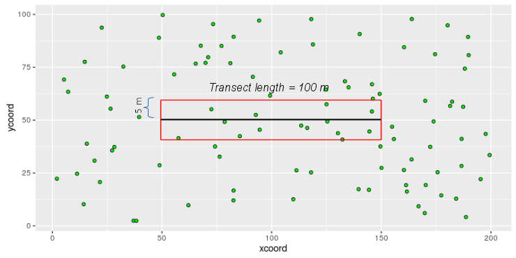
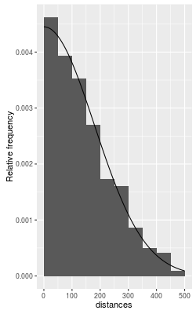
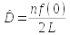
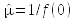
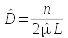
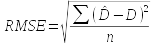

Today we will compare the density estimates obtained using fixed width transects and using distance sampling.
Fixed width sampling is the simpler method - an observer walks a transect, and counts all of the individuals observed within a fixed distance of the line. The area sampled is simply the length of the line multiplied by twice the distance:
 Consider this example - the green circles are coast horned lizards for which we want a density estimate. The black line is the transect line we would walk along, and it is 100 m long. We would record every lizard within 5 m of the line, so the area surveyed is:
A = 100 x 5 x 2 = 1000 m2
Within this fixed width transect there are 14 lizards, so the density of lizards would be estimated as:
D̂ = n / A = 14/1000 = 0.014 lizards per square meter
To express this as lizards per hectare, we could multiply by the number of square meters per hectare (10000), which gives us the estimate as 140 lizards per hectare.
The problem with fixed-width samples, however, is that they assume that every individual that is within the transect is detected. This is probably reasonable if the transect width is narrow, but as the width of the transect increases it becomes increasingly unlikely to be true. If some of the individuals in the transect are missed the density estimate will be biased low, so to be effective fixed-width transects have to be narrow.
But, narrow transects sample a smaller area for a given transect length. A small area sampled means few lizards detected, which would lead to variable, imprecise estimates of density.
 Distance sampling solves the detectability problem by modeling changes in detectability with increasing distance. In distance sampling, every individual detected is counted, and its perpendicular distance from the line is also measured, but it is assumed that not every individual present was actually seen.
The distribution of detection distances is used to measure the change in detectability with distance. The line fitted to the distribution of distances in the graph to the left illustrates the approach - if the actual density is constant throughout the region then the decline in numbers of detections with distance is purely due to a change in detectability, so once we know how detectability changes we can adjust for the animals not seen.
The equation for the population density estimate is ; n is the number of individuals counted, and L is the length of the transect. The detection function is f(x), and f(0) refers to the value of the function when 0 is plugged in (in other words, f(0) is f(x) evaluated at 0). The detection function evaluated at zero is the inverse of the effective width, which refers to the equivalent width of a fixed-width transect sampled with perfect detectability. If f(0) is the inverse of the effective width, then  is the estimate of effective width.
Using effective width instead of f(0) makes the estimator , which looks just like the formula for density in a fixed width transect, except that effective width is used in place of the fixed width of the transect. Distance sampling estimates the curve that describes the reduction in detectability with distance, uses it to estimate effective width, and then calculates the density from the number of individuals observed, the length of the transect, and the effective width.
Distance sampling is great stuff - it's clever and sophisticated, and improves on fixed width estimates. However, like any estimation method, it makes some assumptions:
I put together a simulation for you to use, which can open in a separate window by clicking here.
Once the link opens, you will see a blank table of density estimates at the top, and a map of an area of California desert somewhere not too far from here.
The transect length is set initially to 100 (m) and the distance visible is set to 20 (m). When you click the "Select transect" button for the first time a transect 100 m long is placed on the map, and the horned lizards detected are shown as colored dots.
If you click on the "Select transect" button a second time, you'll see that a new transect is selected, with a new distance sample and a new fixed width sample. The density estimates update to reflect this new sample.
There are two properties of the sampling that you can change:
The activity for today is to try out a range of detection distances, and a range of transect lengths, and see how distance sampling estimates and fixed width transect estimates compare. Download this worksheet to your S: drive, and use it to record your results. You'll see that the Data worksheet is already laid out for you with lengths of transects and distances, you just need to fill in with survey results.
1. Varying detection distance. Keeping the length of transect at 100, with the Distance detectable to 20 m, click "Select transect" and record the five statistics for this combination of distance and transect length in your worksheet. The button below the table of density estimates, labeled "Copy estimates", copies all of the things you need to record for each run in a format that can be pasted directly into the spreadsheet, so all you will need to do is to set the transect lengths and detection distances to values given below, select the transect, and then copy and paste the values into Excel.
Repeat four more times at 20 m, and then repeat the process for detection distances of:
As you are working through this part of the activity watch the histogram on the left side of the simulation - you should see that more lizards are detected as your visibility increases, and this gives you a better match between the bars of the histogram and the detection function. Given how important that detection function is to a distance sampling estimate of density, you might anticipate better estimates as the visibility increases.
Before you move on, think about detectability - we are able to set detection distance to any value we want in a simulation like this one, but how much control would you have over it in nature? You can influence detectability through your sampling methods - you can use binoculars, you can survey when the animals are most active (dawn for songbirds, nighttime for frogs, etc.), you can avoid days with poor visibility (high wind, rain, fog, etc.). However, detectability is also strongly influenced by factors that are beyond your control, like environmental conditions (whether the area is heavily vegetated, whether there are leaves on the trees) and by how cryptic the organisms you're surveying are.
2. Varying transect length. Set the detection distance back to 20 m, and set the transect length to 200 m. Generate 5 transects for 20 m detection distance, then 5 for 50 m detection distance, and 5 for 100 m detection distance. Remember to copy the estimates and paste them into your Excel sheet each time (if you start seeing duplicated rows you forgot to copy the estimates before pasting - don't ask how I know that - so generate a new transect and copy/paste over one of the duplicates if this happens to you).
Then set the transect length to 400 m, and then use the 20, 50, and 100 m detection distances for that transect length (five each).
Again, watch the histogram - longer transects will give you more points at a given detection distance. The n.fw values go up as well. You might thus expect longer transects will give you better estimates.
Keep in mind that this is actually the parameter you have the most control over when you are monitoring. The length of the transect is an investigator's choice, within limits. For example, longer transects are more likely to cross over into a different habitat that has a different density of organisms, which would run afoul of the constant density assumption. There may also be boundaries on the study area or barriers to movement that can't be gotten around. But, within these broad constraints, any transect length can be used.
3. Squared differences from true density. Once you have your results in your Excel spreadsheet (which you should SAVE NOW), you need to do two more calculations before you can analyze the data. We know what the actual density of dots on the map is, and we need to assess how close our estimates were to the correct number. We will calculate a statistic called the "root mean square error", or RMSE, to measure this. The calculation is like a standard deviation, but we use the known density instead of the mean of the data:
The hat-D's are the estimates, and D is the known density. The formula calculates the average of the squared differences between the estimates and the true value, and then takes the square root of the average. There are 9600 animals (mostly hidden) on a map that is 1200 m by 1600 m, or 9600/(1200x1600) = 0.005 lizards per square meter. Multiplying by 10,000 m2/ha gives us 50 lizards per hectare - this is the true value of density, D. We will use PivotTables to calculate the averages, so for now we just need the squared differences for each of our estimates.
In cell H1 type "Density.sqdiff", and in cell i1 type "FW.sqdiff". In H2 enter the formula:
=(d2-50)^2
and in I2 enter:
=(g2-50)^2
Copy and paste cells H2 and i2 down to the rest of the rows. Now you're ready for some pivot tables.
4. Summarizing distance sampling density estimates with a PivotTable. Select cell A1, and insert a PivotTable. Let Excel put the table in a new worksheet.
We'll do the distance sampling data first:
Once you have your new worksheet with your PivotTable, change the name of the new worksheet to "Pivot" (double-click on its tab and change the name to Pivot).
5. Summarizing fixed width sampling estimates with a PivotTable. Switch back to sheet Data. Select cell A1 again, and insert another PivotTable, but this time use the Existing Worksheet option and put it in the Pivot worksheet, in cell A15.
6. Collect results. We will be making several different PivotTables, so we need to record results - add a new worksheet, and change its name to "Results".
Back in sheet Pivot, select the first PivotTable in cells A3 through E8, copy, and paste special as values in the Results sheet in cell A5. In cell A1 enter the label "Distance sampling", and in cell A3 type "Average density".
Switch to Pivot, copy your fixed width density estimates from A15 to B19, switch to Results and paste-special as values to cell H6. In cell H1 type "Fixed width transect".
You can change the label in cells A6 and H6 to "Transect length" (do this for each of the pivot tables you put into Results).
7. Number of lizards detected. Back to sheet Pivot. Keep the same layout for each pivot table, but take out the densities, and put in the number of points detected - this will be n.dist for the distance sampling pivot table, and n.fw for the fixed width transect pivot table. Set the value fields to calculate averages.
Copy and paste-special the values for the distance sampling pivot table, into the Results sheet in cell A14. Type "Number of points" in cell A12. Copy and paste-special the fixed width pivot table into cell H15.
8. Effective width of distance samples. Back in sheet Pivot, calculate the average effective width for distance sampling - take out the n.dist field from Σ values, and put in Eff.width.dist. Change it to an average.
Copy and paste this table to Results, cell A23. Enter "Effective width" in cell A21. We didn't need to estimate an effective width for fixed width sampling, because the width was always 10 m.
9. RMSE of estimates. Back in sheet Pivot, take out Eff.width.dist from Σ values, and put in Density.sqdiff, and change it to an average. Do the same for fixed width - take out n.fw, and put in FW.sqdiff and change it to an average. Copy the distance sampling table from Pivot, and paste-special as values in Results cell A32. Copy the fixed width table and paste-special in cell H33 of Results.
Enter the label "Mean squared differences" in cell A30.
We're not quite done with this calculation though - we need square roots of these values.
So, in cell A39 enter "Root mean square error". We will want to use the same layout as the tables we have been copying and pasting, so as a convenient way to get the layout all at once copy the mean squared difference table (cells A32 to E37), and paste it into A41.
Then, in the first cell of data (B43) enter the formula =sqrt(b34) - this will take the square root of the mean squared error from B34. Copy and paste this cell to the rest of the cells in the table to complete the RMSE calculation for distance sampling.
Do the same for fixed width - copy the table from H33 to I37, paste it to H42, and then replace the table entries with formulas that calculate the square roots.
10. Graph the results. To make the comparison between the methods easier, we need to graph each of the results. The names on the graph will come from column names, so change the fixed width column labels to FW for all of the results in column I (cells I6, I15, and I42).
Then to make a graph of the average densities, do the following:
You'll see that all of the methods give fairly consistent estimates of density on average. This shows that both of the methods are unbiased.
Repeat these steps to get graphs of:
You should see that distance sampling does better than fixed width sampling usually, particularly when the detection distance is 50 or 100. You should also see that increasing the transect length is generally a good thing for the accuracy of your samples - the RMSE tends to go down with increasing transect length for both methods, because longer transects mean more detections (your graph of detections should show an increase as the transect length increases, or as the detectability increases).
It's difficult to tell with just one set of estimates, but both distance sampling and fixed width sampling is unbiased - the estimates are correct on average. Your estimated densities should be around 50 for both methods at all transect lengths and detection distances. What changes is the variability in the estimates, and there distance sampling is usually better.
That's it! Save your work, you'll need it for the final project write-up.